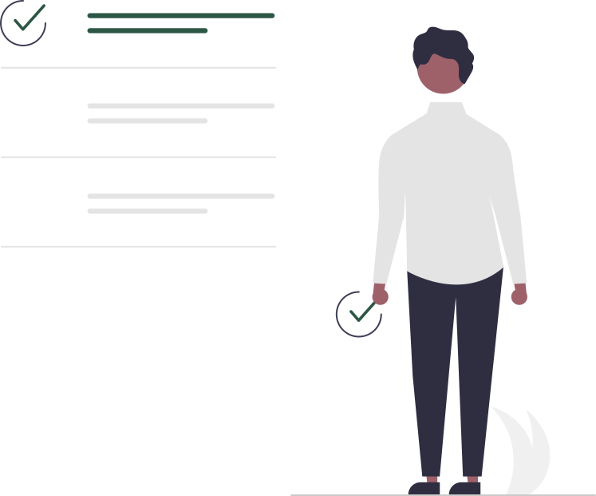

A new report from TD Bank, the 2026 AI Insights Report, confirms what many business leaders have been feeling for months: AI is no longer a distant future project, it's a present-day imperative. The findings point to a critical inflection point where ambition meets the hard reality of adoption. For companies in Central New York, understanding this dynamic is the difference between riding the wave and getting left behind.
Source: TD Bank: 2026 AI Insights Report
The State of Play: Ambition vs. Reality
The report highlights a serious execution gap:
- 78% of North American companies describe themselves as "ambitious" about AI.
- 63% have actually moved beyond experimentation into sustained adoption.
That 15-point gap represents stalled pilots, half-built prototypes, and teams that can't convert enthusiasm into ROI. It isn't a technology issue, it's an operating model issue.
The Challenges: More Than Just Tech

TD Bank's research surfaces the same obstacles we see across Upstate AI clients:
- Lack of skilled talent: Internal teams aren't staffed to scope, build, and maintain AI systems.
- Data quality issues: Messy, incomplete, or siloed data cripples AI performance.
- Interoperability headaches: New AI layers rarely plug cleanly into legacy systems.
- Security and privacy risk: Regulated industries can't compromise on sensitive data.
These are organizational challenges. Solving them requires workflow redesign, change management, and leadership alignment, not just buying another AI tool.
Leaders vs. Laggards: The ROI Divide
TD Bank distinguishes "High-Performing Firms" from those still stuck in pilot purgatory. The high performers are already generating 15%+ ROI on their AI investments because they:
- Focus AI on customer experience (journey mapping, personalization, outreach).
- Automate productivity bottlenecks and rebalance work across humans + AI.
- Use AI to launch new services instead of treating it as a feature add-on.
In short, they treat AI as a strategic enabler, not a skunkworks project.
Connecting the Dots for Central New York
If you're a manufacturing firm in Auburn, a logistics company in Syracuse, or a professional services shop in Utica, TD Bank's data offers a clear roadmap:
- Define the workflow. Pick a process where AI can own an entire task list, not just a single email draft.
- Quantify the impact. Tie every AI initiative to a specific cost reduction, responsiveness goal, or revenue lever.
- Plan the talent. Decide what stays in-house, what can be automated, and where fractional AI expertise makes sense.
The companies winning in this report aren't bigger, they're simply more decisive about where AI lives inside their operations.
The Inflection Point Demands Action
The report's conclusion is blunt: the AI gap will widen. Ambitious companies that execute now will compound their advantage. Those who stall will find themselves playing catch-up against competitors whose cost structures and customer experiences are permanently upgraded.
At Upstate AI, we call this the task-responsibility offset. When AI takes ownership of a workflow, you unlock growth without adding headcount. That's how our clients are creating breathing room in their budgets and time in their calendars.